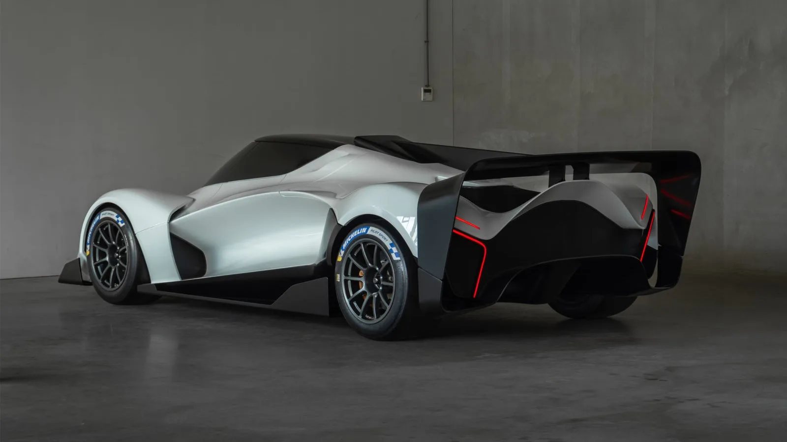

Sanrivatti · 全球首發 · 荷蘭2026-11-13
Sanrivatti One：跪姿駕駛的 V10 賽道超跑，以遊隼與戰機為靈感
The Sanrivatti One Supercar Has an 800-HP Judd V-10 and a Motorcycle-Like Seating Position
荷蘭新創 Sanrivatti 11 月 13 日完整發表 One：中置 5.5 升自然進氣 Judd V10、800 匹馬力，碳纖維單體車身，乾重約 1,100 公斤，原廠配光頭胎，定位賽道專用。最大話題是像騎重機一樣「跪著、頭在腿前面」的駕駛姿勢。
設計解析 Design Notes
- 人因駕駛採跪姿、頭部位在雙腿前方，類似重機騎姿，顛覆傳統坐姿。
- 造型側面一道掃過全車的特徵線，模仿遊隼俯衝時的翅膀。
- 座艙罩一體式座艙罩與車鼻進氣口，取材自戰鬥機。
- 空力大型尾翼從擴散器向上伸出，車尾大面積開放以幫 V10 散熱。